Now with themes, web UI & satellite tracking
What planes are flying
over my house?
A Raspberry Pi-powered RGB LED matrix that sits on your fridge and shows you exactly what aircraft are overhead — in real time.

A Raspberry Pi-powered RGB LED matrix that sits on your fridge and shows you exactly what aircraft are overhead — in real time.
The FlightTracker has been completely rebuilt from the ground up. The original fridge gadget you loved is now a full-featured display platform with a web interface, theming, and multiple data sources.
Three built-in colour themes — Default, Monochrome, and Pastel. Every element of the display is themed, from flight data to weather gradients. Switch instantly from the web UI.
A built-in Flask web server lets you configure everything from your phone or laptop. Set your location on an interactive map, pick a theme, adjust brightness, and view live logs — no SSH required.
Choose how flight data is shown: aircraft make & model, or live telemetry (altitude, speed, heading). Full airport names or abbreviations. It's all configurable.
Got your own ADS-B receiver? Point the tracker at your local tar1090 or dump1090 instance and bypass FlightRadar24 entirely. No API keys, no rate limits — your data, your rules.
Track the ISS and other satellites on an Az-El polar plot. TLE data is fetched from CelesTrak and cached locally. Satellite passes appear automatically when they're above your horizon.
When no flights are overhead, the display shows the time, date, and temperature. With an OpenWeather API key, you can also display a rainfall chart. Temperature is colour-coded by gradient.
From a daft idea to a finished unit on the fridge. Here's how it came together.
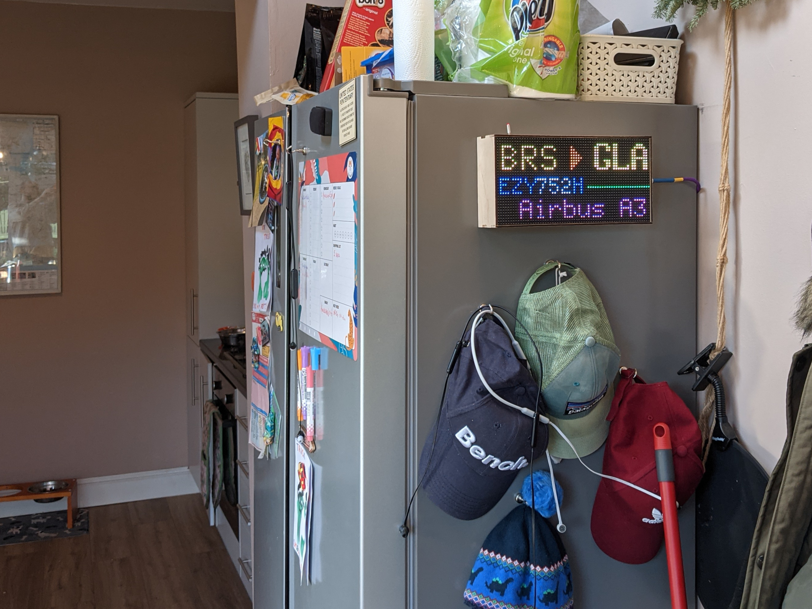
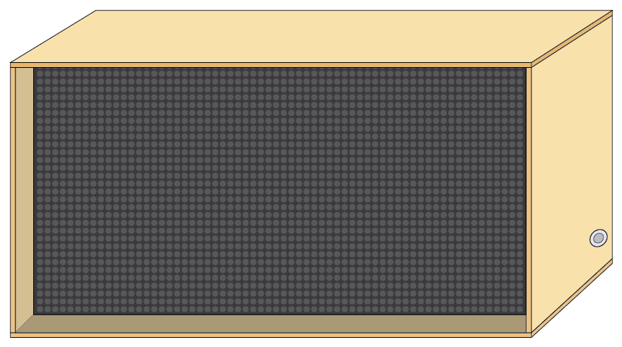
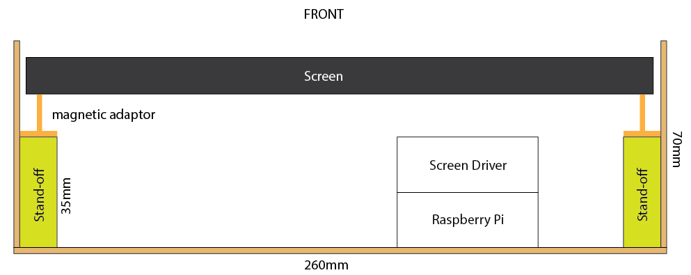
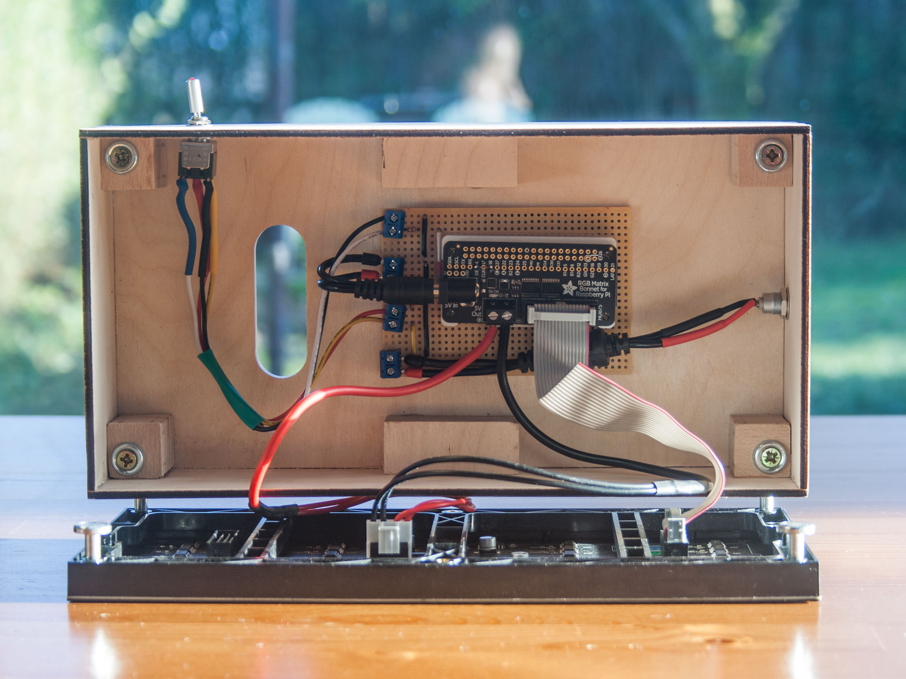
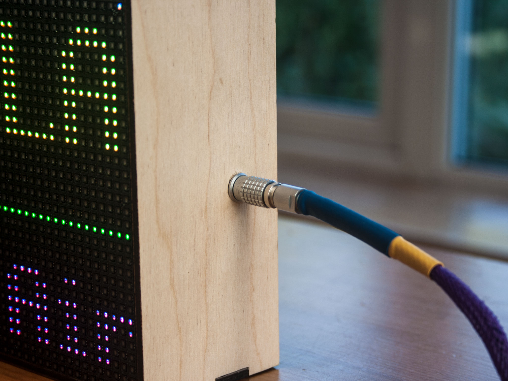
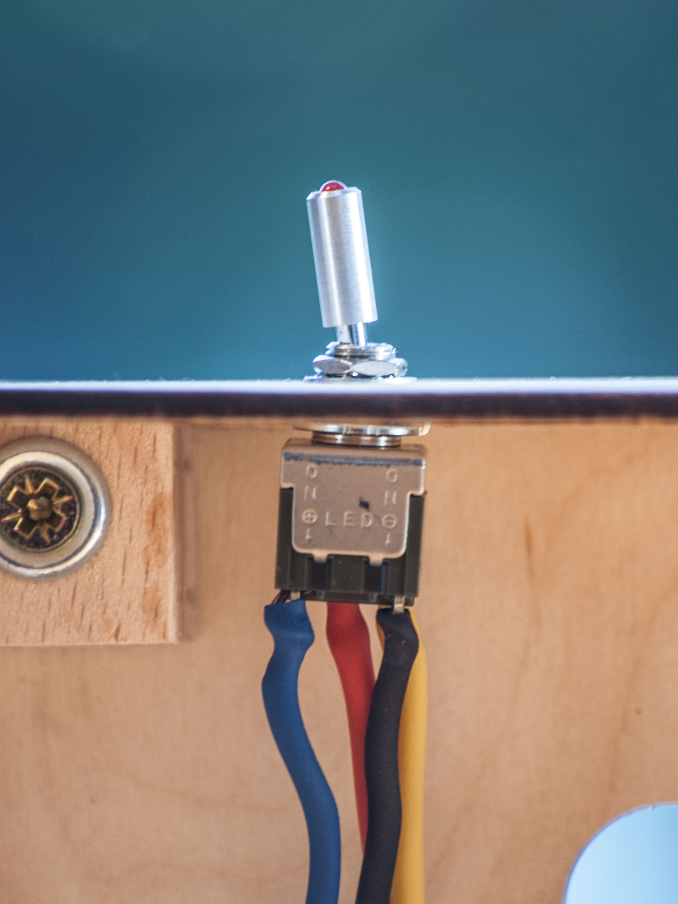
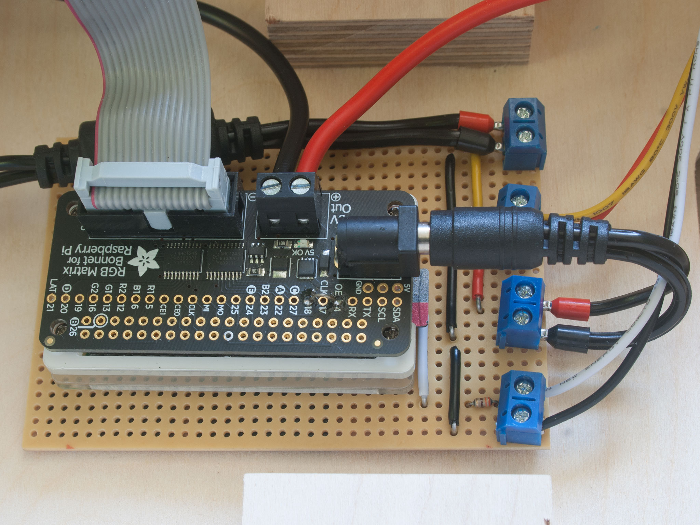
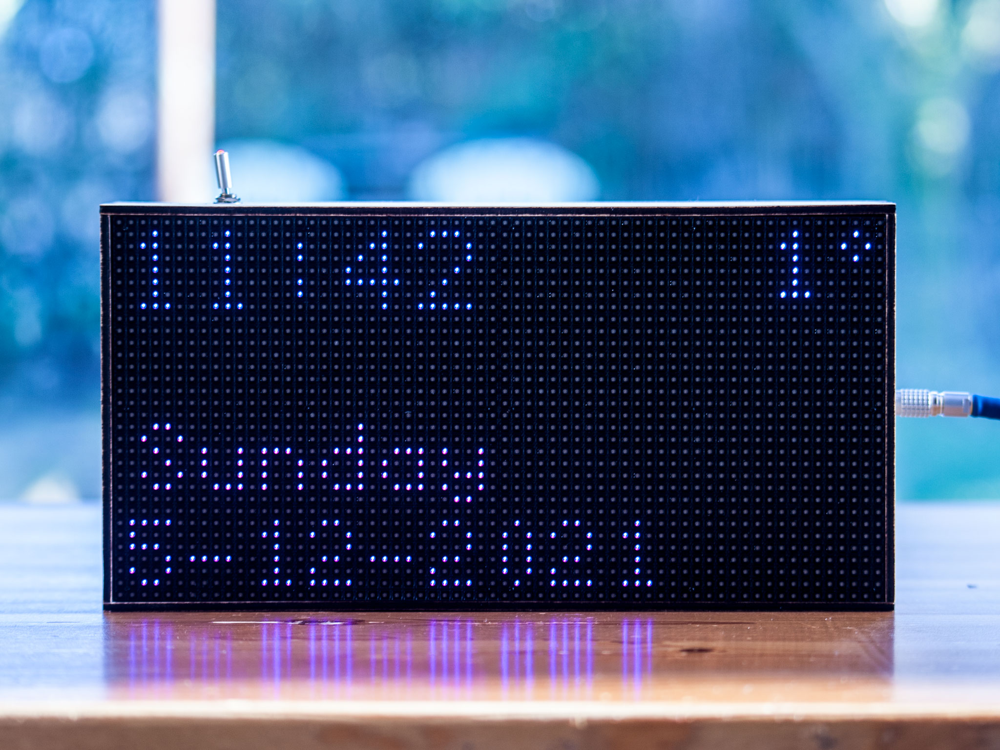
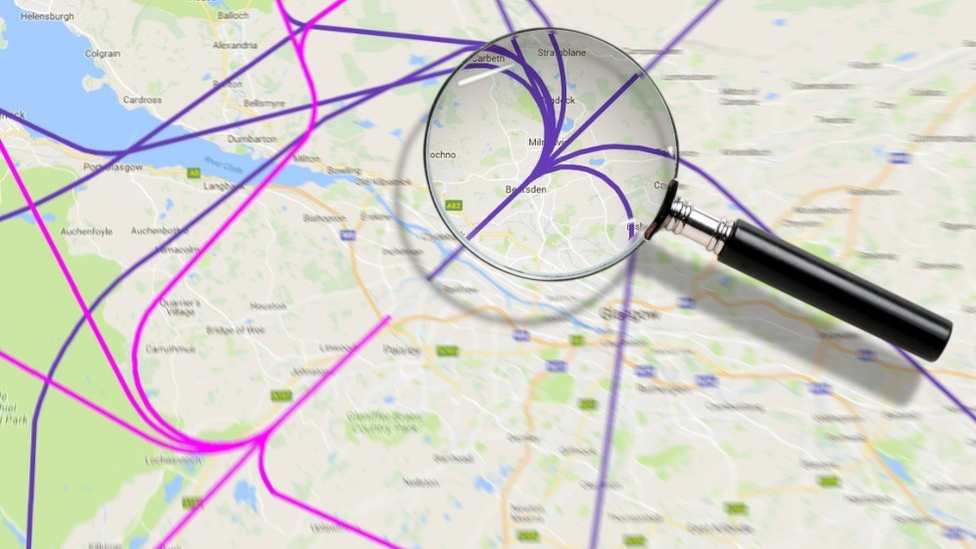
It started with the realisation that the serene neighbourhood we'd moved into was directly on the flight path for Glasgow airport. Close enough to notice the difference in how each plane sounds, far enough that the windows don't always shake.
"How cool would it be to say, 'that sounds like an Engine Alliance GP7000, must be an Airbus A380'? Not very, but that didn't put me off building something to tell me what aircraft are nearby."
The plan was simple: a wooden box with a dot matrix screen, driven by a Raspberry Pi, showing live flight data from FlightRadar24. Big magnets on the back so it mounts to the fridge. As close to a featureless box as possible — just the screen and a single fancy cable.
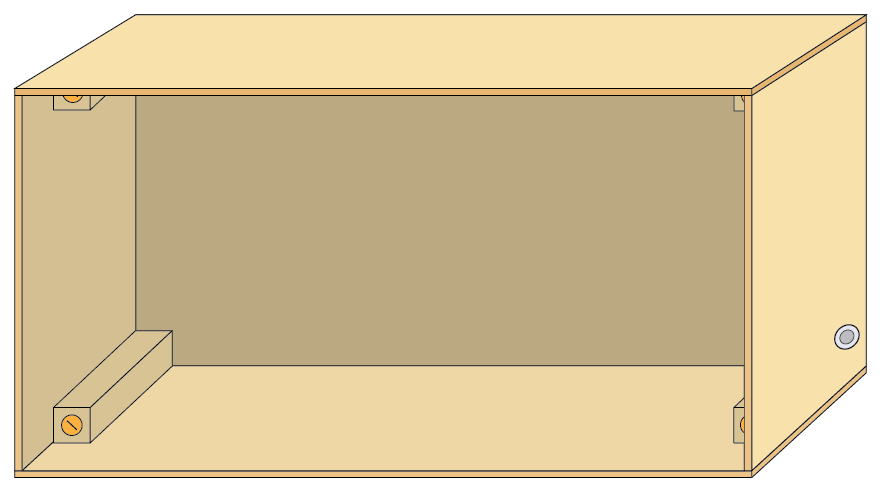
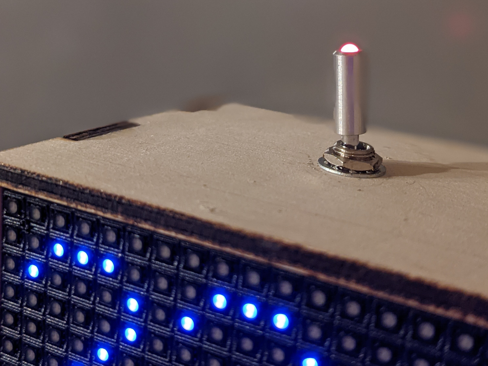
The case was designed in Illustrator and brought to life by Lee Turnbull — an engineer and fantastic joiner. Interlocking laser-cut birch, with neodymium magnets embedded in the back for fridge mounting and neoprene to stop it slipping.
The electronics centre on a Pi Zero W and the Adafruit RGB Matrix Bonnet driving a 64×32 LED panel. Power comes through a 5V LED strip supply brick, but the cable was swapped for a Lemo 0B push-pull connector — totally the wrong kind of connector for the job, but gorgeous. Purple braiding, heat-shrink strain relief, the works.
The software started as an excuse to brush up on C++, but CMake quickly dissuaded that notion. The Python bindings for rpi-rgb-led-matrix did the job beautifully. A custom animation engine drives the display frame-by-frame — each element (callsign, journey, scrolling text, loading pixel) runs on its own keyframe schedule.
And now, it's grown up. The new version adds a full web configuration UI, theme system, satellite tracking, and support for your own ADS-B receiver. The original daft idea has become a proper platform.
Three built-in themes, switchable from the web UI. Every colour on the display is themed.
You'll need a Raspberry Pi, an RGB LED matrix, and a couple of hours. Full instructions are in the repo.